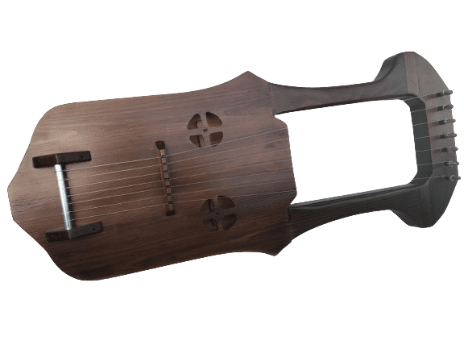

Лира древний струнный щипковый музыкальный инструмент родом из 14-16 веков. Имеет плоский
корпус округлой формы, обычно имеет 7 нейлоновых струн, но может иметь и более.
Состоит из деревянного корпуса, звуковой резонаторной полости, соединенной перегородкой с двумя ручками.
Лира является музыкальным наследием
древних времен: этот струнный инструмент был распространен во многих странах и был обновлен разными цивилизациями и получил
различные формы и названия. Лира считается самым популярным сохранившимся типом средневековым струнным музыкальным инструментом.
Одним из популярных видов средневековой лиры является Kravik Lyre (Кравик-Лира) — струнный инструмент ручной работы, который мы предлагаем вам в обновленной современной форме с
индивидуальным дизайном.
Купить Лиру можно ЗДЕСЬ